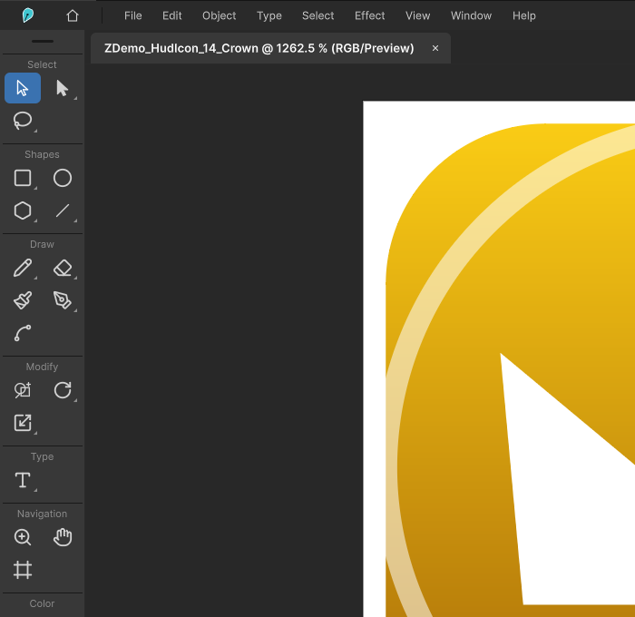
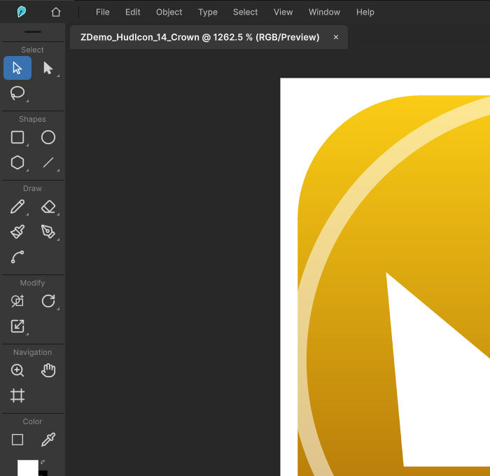
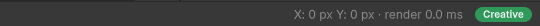
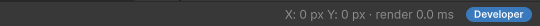

Creative and Developer Mode
Choose how much of the painter you see: everything, or only what the game can draw.
Vectoria Painter can draw more than the default game renderer can show. A text layer, a drop shadow or a pattern fill looks fine in the painter, but the Shader resolver (the main way Vectoria Image draws, see Choosing a resolver) skips them. The mode decides how much of that you are offered, so you can avoid drawing things that will not show.
The two modes
| Creative | Developer | |
|---|---|---|
| Default | Yes | No |
| Offers | Every feature | Only what the Shader resolver can draw |
| Best for | Illustration, and art you export to PNG or SVG | Art that will be shown in your game with Vectoria Image |


What Developer mode hides
| Where | Hidden |
|---|---|
| Tools | All type tools, all symbol tools, Blend and Mesh |
| Menus | The Effect menu |
| Properties | The fx button for live effects, and pattern fills |
| Libraries | The Brushes tab |
Anything already in the file is kept. You just cannot add or edit it until you switch back to Creative. The setting belongs to you (it is stored in your editor preferences), not to the document.
Which one to pick
- Pick Developer when you draw for the game. Everything you can draw then also appears on screen.
- Pick Creative for illustrations you export as images, or when the artwork is shown by the Painter2D resolver on a UI Toolkit element. Painter2D does draw effects and patterns.
Switching
The badge at the bottom right of the painter window shows the current mode. Click it to change it.


You can also change it in Preferences (Edit › Preferences, or the Preferences button in Properties), in the Mode setting at the top.